✨ Guía especial
Puzzles 3D: guía completa (tipos, materiales y los mejores modelos)
Tipos, materiales, marcas y cómo elegir según la edad
Tipos, materiales, marcas y cómo elegir según la edad
Un puzzle 3D es mucho más que un rompecabezas plano: sus piezas encajan formando una figura tridimensional real, desde monumentos icónicos como la Torre Eiffel hasta coches deportivos, estadios de fútbol o castillos de tus películas favoritas. Es uno de los regalos que más ha crecido en popularidad en los últimos años, tanto para niños como para adultos que buscan un reto distinto al puzzle de mesa tradicional.
En esta guía te contamos qué es exactamente un puzzle 3D, qué tipos existen según el material y la temática, y te ayudamos a elegir el modelo ideal según la edad de quien lo vaya a montar — con enlaces a nuestras guías específicas de cada categoría.
A diferencia del puzzle clásico, donde las piezas encajan en un plano para formar una imagen, en el puzzle 3D cada pieza tiene volumen y encaja con las demás para levantar una estructura completa: un edificio, un vehículo, un animal o incluso un sistema planetario. No hace falta pegamento ni herramientas — el propio diseño de las piezas (normalmente de espuma rígida, madera o plástico) mantiene la figura en pie una vez montada.
Existen varios tipos según su complejidad y el material con el que están fabricados, que iremos viendo en detalle a lo largo de esta guía. Algunos, además, incorporan luz LED integrada para iluminar la maqueta una vez terminada — un extra muy popular, sobre todo en los modelos de monumentos y estadios.
El material no es solo una cuestión estética: determina la dificultad de montaje, la durabilidad de la figura terminada y para qué edad resulta más adecuado.
Puzzles 3D de madera. Son los más versátiles y también los más populares dentro de esta categoría. Las piezas de madera contrachapada o MDF se cortan con precisión láser y encajan a presión, sin pegamento. Los hay desde modelos sencillos pensados para niños hasta réplicas de gran detalle para adultos coleccionistas.
Puedes ver el catálogo completo en nuestra guía de puzzles 3D de madera.
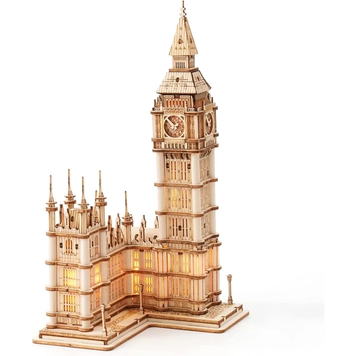
Big Ben Ver en Amazon →Puzzles 3D metálicos. Piezas de metal troquelado, mucho más pequeñas y minuciosas, pensadas para un público adulto con paciencia y buena vista. Marcas como Piececool son referencia en este segmento. No son la mejor opción para regalar a niños pequeños.
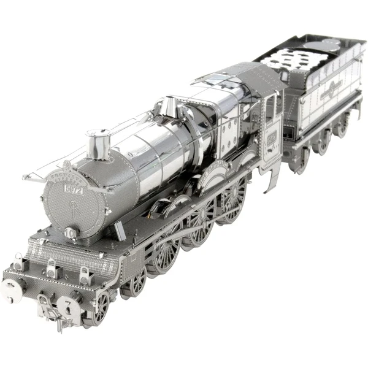
Tren Hogwarts Ver en Amazon →Puzzles 3D con luz LED. No es un material en sí, sino un extra que incorporan muchos modelos (sobre todo de monumentos y estadios): un pequeño circuito con luces LED que ilumina la maqueta una vez montada. Suele encarecer el producto, pero es de los detalles que más valoran quienes compran para regalar.
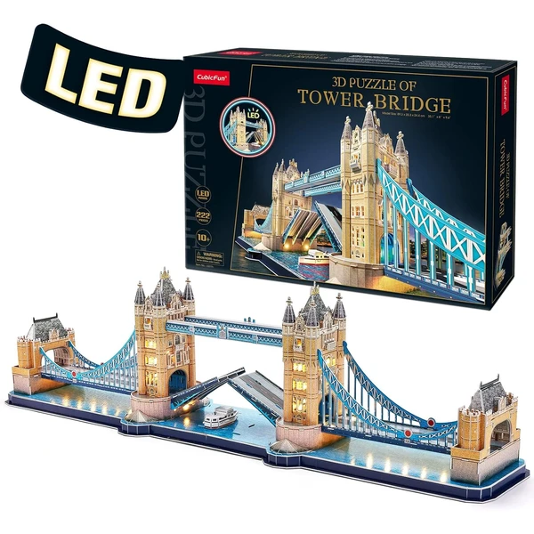
Puente Londres Ver en Amazon →Puzzles 3D de cristal. Piezas de plástico transparente que forman figuras con efecto "cristal", muy habituales en modelos de animales y esferas decorativas. Ligeros, económicos y fáciles de montar — buena opción de entrada para los más pequeños.
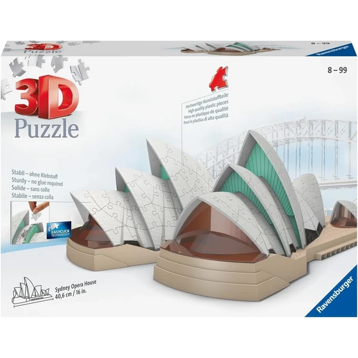
Sydney Opera House Ver en Amazon →Dentro de los puzzles 3D de madera hay una categoría propia que merece mención aparte por lo bien que encaja como regalo infantil: las figuras de animales y dinosaurios. Suelen ser modelos de tamaño reducido, con piezas grandes y pocas unidades, pensados específicamente para que los niños puedan montarlos con poca o ninguna ayuda de un adulto.
Más allá del juego, tienen un componente educativo claro: ayudan a trabajar la motricidad fina, la paciencia y el reconocimiento de formas, y son un buen punto de entrada antes de pasar a modelos más complejos como un monumento o un estadio. Los dinosaurios en concreto —T-Rex, Velociraptor y otras especies clásicas— son de los temas que más entusiasmo generan entre los niños de 5 a 10 años.
Puedes ver más modelos en nuestra guía de puzzles 3D de animales y dinosaurios.
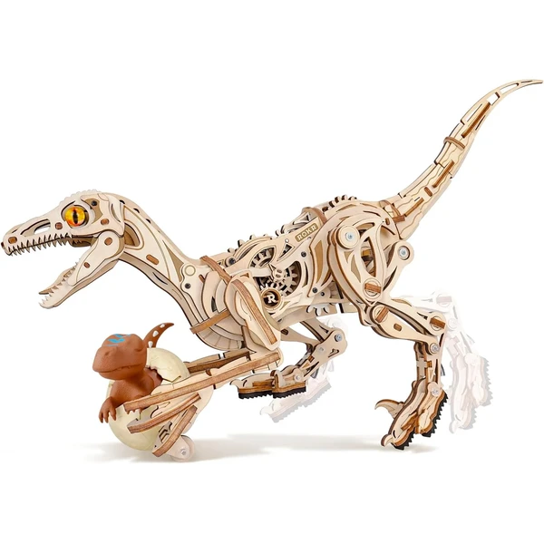
Dinosaurio Ver en Amazon →Si el destinatario del regalo tiene una saga o personaje favorito, esta es probablemente la categoría con más acierto garantizado — y también una de las más populares dentro de todo el catálogo de puzzles 3D con temática infantil y familiar.
Harry Potter. El Castillo de Hogwarts es, con diferencia, el modelo estrella: una réplica detallada de la escuela de magia que suele venderse en varias versiones según el número de piezas y si incluye luz LED. También hay modelos del Callejón Diagon y del autobús noctámbulo, aunque mucho menos habituales.
 Castillo Hogwarts
Ver en Amazon →
Castillo Hogwarts
Ver en Amazon →
Star Wars. Naves icónicas como el Halcón Milenario y figuras de personajes como Yoda, normalmente en versión de madera o espuma rígida, con distintos niveles de dificultad según la edad.
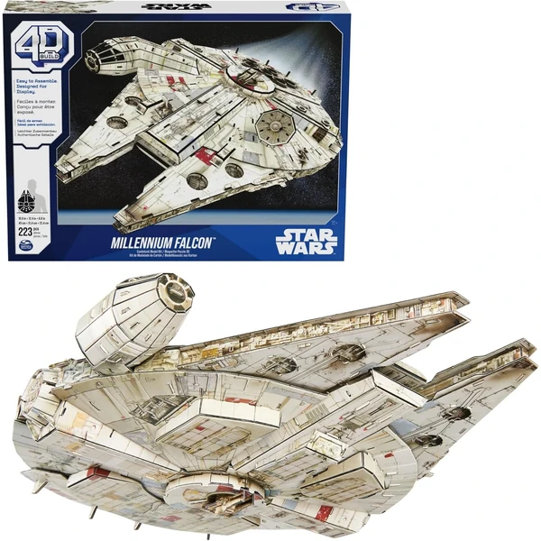
Halcón Milenario Ver en Amazon →Marvel y superhéroes. Figuras individuales de Spiderman, Iron Man o los Avengers en conjunto — formato más sencillo, pensado para un público más infantil que los modelos de Star Wars o Harry Potter.
 Spiderman
Ver en Amazon →
Spiderman
Ver en Amazon →
Pokémon. Sobre todo Pikachu y figuras de la Pokédex más popular; sigue siendo un valor seguro para el público de 6 a 12 años.
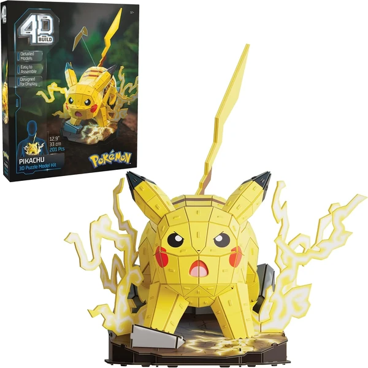
Pikachu Ver en Amazon →Disney. Castillos de Disney y de Frozen, con un enfoque claramente orientado a los más pequeños de la casa. Como ejemplo, en nuestra selección de puzzles para 6 años tenemos un puzzle 3D de Stitch, pensado como primer contacto con este tipo de puzzle.
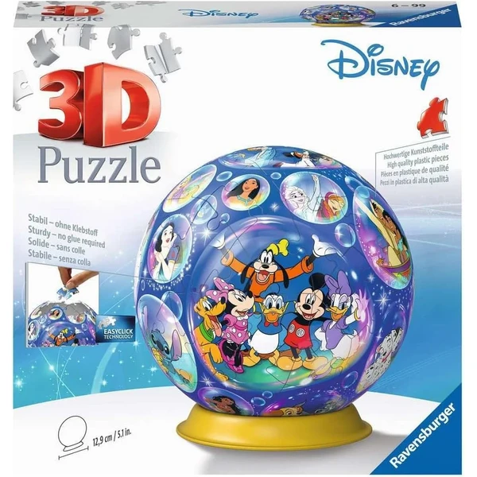
Disney Ver en Amazon →En todos los casos, el precio y la dificultad suelen variar mucho según si se trata de una figura pequeña de una sola pieza compacta o de una réplica grande de cientos de piezas — algo que conviene explicar bien en cada guía específica para evitar devoluciones por expectativas de tamaño equivocadas.
Esta es la categoría más clásica y también la más orientada a un público adulto: se compran sobre todo como pieza decorativa o como recuerdo de un viaje, más que como juguete infantil, aunque los adolescentes que disfrutan de retos de mayor dificultad también encuentran aquí muy buenas opciones.
Torre Eiffel. El monumento más popular de toda la categoría. Hay versiones de distintos tamaños, desde modelos pequeños de sobremesa hasta réplicas de gran formato, y varias con opción de luz LED.
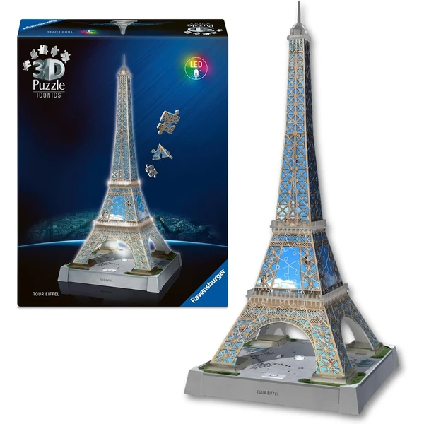
Torre Eiffel Ver en Amazon →Big Ben. El segundo monumento más popular de la categoría, con versiones muy similares en tamaño y acabado a las de la Torre Eiffel — Ravensburger es una de las marcas de referencia aquí.
Notre Dame y Sagrada Familia. Dos catedrales que generan bastante interés, especialmente entre quienes buscan un regalo con un componente cultural o religioso, o como recuerdo tras visitar el edificio real.
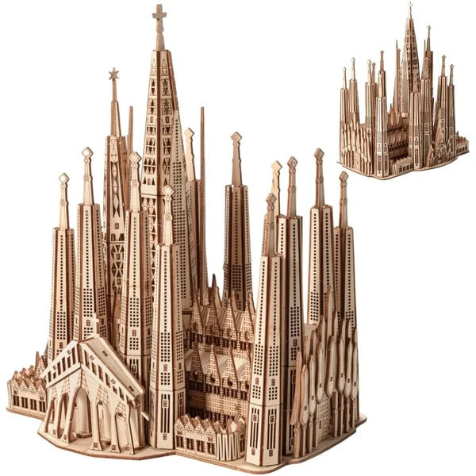
Sagrada Familia Ver en Amazon →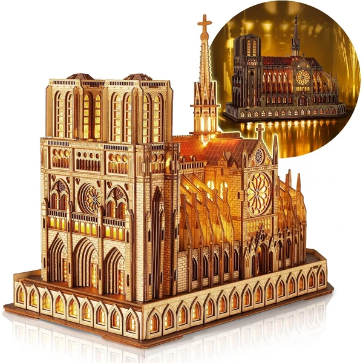
Notre Dame Ver en Amazon →Coliseo romano y Taj Mahal. Menos habituales que los anteriores, pero con presencia constante en el catálogo — suelen aparecer también en listas comparativas de "los mejores monumentos para puzzle 3D".
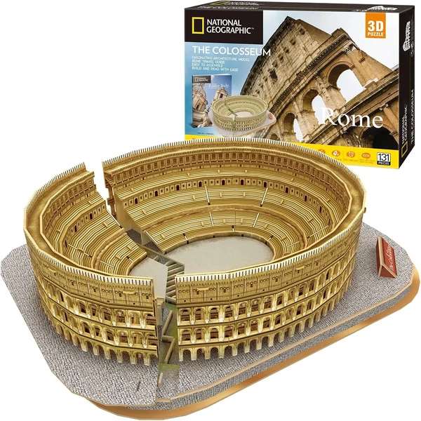
Coliseo Ver en Amazon →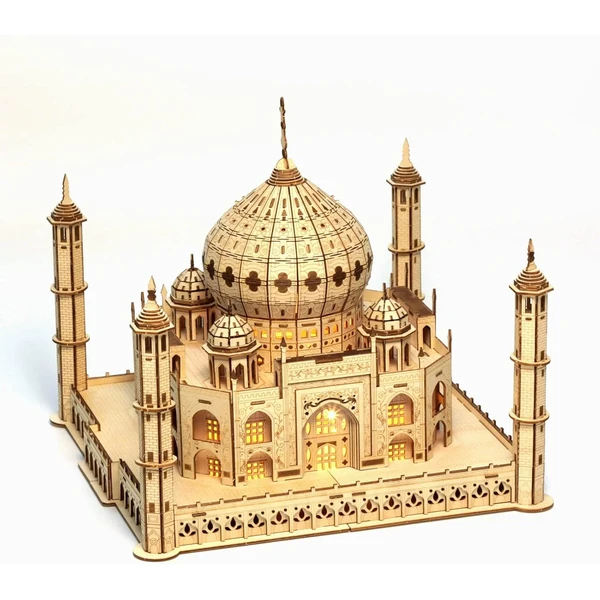
Taj Mahal Ver en Amazon →Otros edificios (Burj Khalifa, Estatua de la Libertad, Empire State, Torres Petronas, Arco del Triunfo). También existen maquetas en 3D de estos edificios, aunque con menos variedad de marcas y modelos que los anteriores.
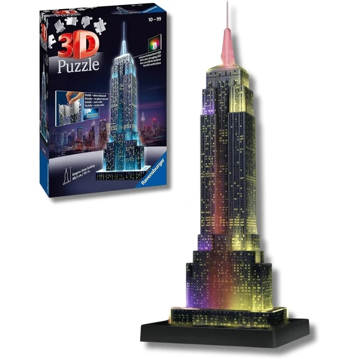
Empire Ver en Amazon →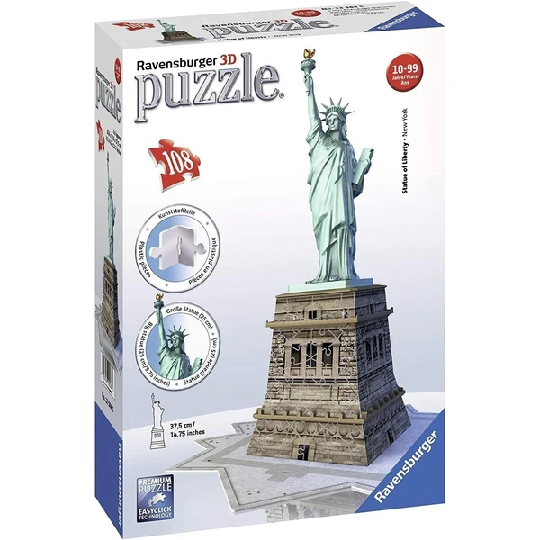
E.Libertad Ver en Amazon →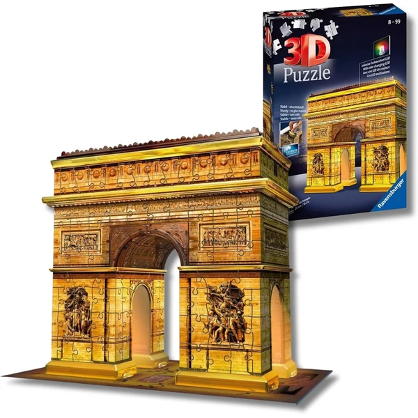
A.Triunfo Ver en Amazon →La inmensa mayoría busca el estadio de su equipo, no "estadios de fútbol" en genérico. El contenido funciona mejor organizado por club que como listado genérico.
Camp Nou. El estadio más popular de toda la categoría. Con las obras de remodelación en marcha, es probable que salgan nuevas versiones de la maqueta — buen gancho para mantener el artículo actualizado.
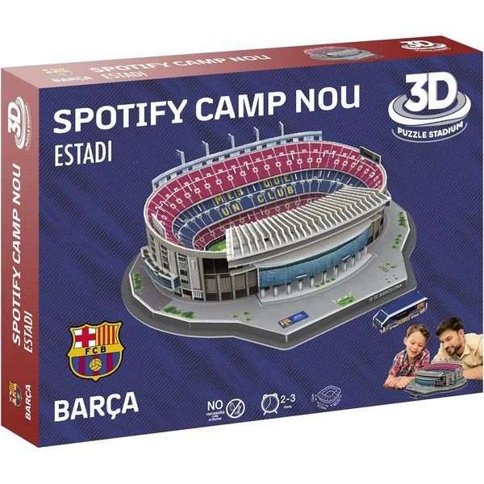
Spotify Camp Nou Ver en Amazon →Santiago Bernabéu. El segundo más popular; el nuevo estadio remodelado del Real Madrid ha generado varias versiones actualizadas de la maqueta. Actualmente no hay disponible una maqueta del nuevo estadio en Amazon — en cuanto exista una opción estable, la añadiremos aquí y en la guía completa de estadios.
Wanda Metropolitano y Benito Villamarín (Betis). También existen maquetas en 3D de estos dos estadios, aunque con menos catálogo disponible que Camp Nou o el Bernabéu.
Mestalla, Vicente Calderón y otros estadios (Anoeta, Allianz Arena, estadios mexicanos). También cuentan con alguna maqueta en 3D, aunque con menos variedad de modelos y marcas que Camp Nou, el Bernabéu o el Wanda Metropolitano.
Perfil de comprador claramente adulto — aficionados al motor, coleccionistas y clásico como regalo, más que juguete infantil.
Coches deportivos (Lamborghini, Porsche, Ferrari, Bugatti, BMW, Mustang). El grupo más amplio dentro de vehículos. Modelos de mayor dificultad y buen nivel de detalle mecánico.
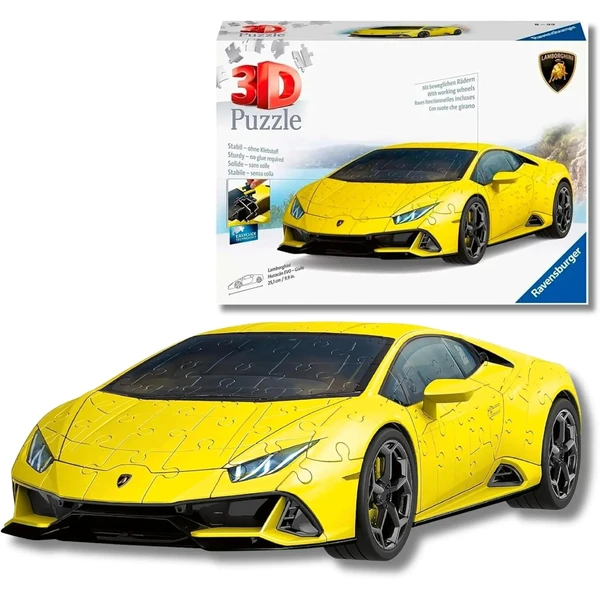
Lamborghini Huracán Ver en Amazon →Titanic. El barco más popular con diferencia, con varias versiones según tamaño y si incluye luz LED en los camarotes.
 Titanic
Ver en Amazon →
Titanic
Ver en Amazon →
Volkswagen. Con menos modelos disponibles pero presencia constante, casi siempre asociado al modelo clásico tipo furgoneta (T1).
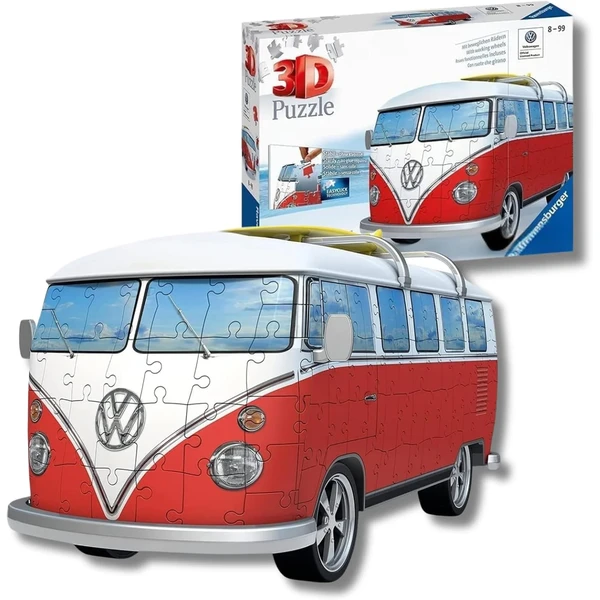
Wolkswagen Ver en Amazon →Barcos piratas (Black Pearl, Queen Anne's Revenge) y aviones genéricos. También hay alguna opción disponible en 3D, aunque con menos variedad que el Titanic o los coches deportivos.
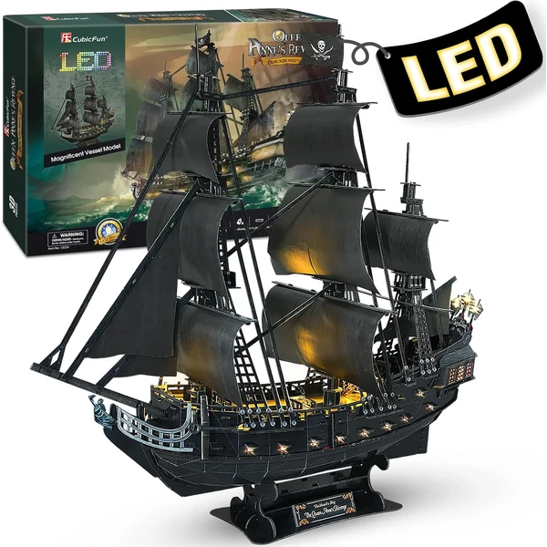
Black Pearl Ver en Amazon →No todas las marcas de puzzle 3D apuntan al mismo público. Antes de elegir un modelo por su temática, conviene saber qué marca se ajusta mejor a lo que buscas — desde calidad premium con licencias oficiales hasta piezas de coleccionista para adultos exigentes.
Ravensburger. La marca de referencia en el segmento premium, con el catálogo más amplio de licencias oficiales y el mejor acabado de piezas del mercado. Apuesta más segura si el regalo es para alguien que valora la calidad por encima del precio.
Puedes ver el catálogo completo en nuestra guía dedicada a Ravensburger.
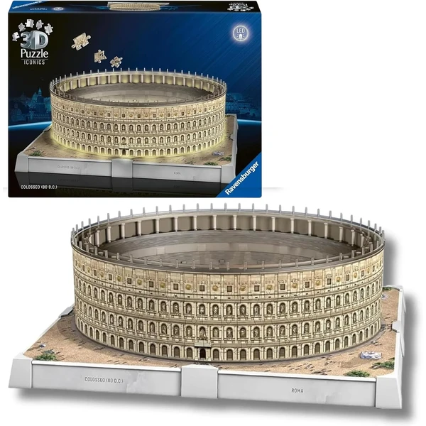
Coliseo Ver en Amazon →Otras marcas de puzzles son:
CubicFun. Especializada en monumentos y edificios icónicos, con buena relación calidad-precio.
Robotime / Rokr. Mecanismos de madera más elaborados —algunos con piezas móviles y motor—, pensados para un público adulto que disfruta del proceso de montaje.
Ugears. Mecanismos aún más elaborados y precio más alto; referencia para el comprador coleccionista con experiencia previa.
Wrebbit. Formato de pieza grande, más cercano al puzzle tradicional en tamaño de pieza — catálogo reducido, pero con público fiel.
Clementoni y National Geographic. Dos alternativas de gama media dentro del catálogo, con menos variedad de modelos que Ravensburger o CubicFun.
No todos los puzzles 3D valen para cualquier edad, y es probablemente la pregunta que más dudas genera antes de comprar. La clave no está tanto en la temática (un niño puede querer un Ferrari igual que un adulto) sino en dos factores: el número de piezas y el tamaño de cada pieza.
De 4 a 7 años: modelos de pocas piezas (entre 10 y 40), grandes y fáciles de manipular — los puzzles educativos de animales y dinosaurios de madera son ideales aquí.
De 8 a 12 años: ya pueden abordar modelos de 60 a 150 piezas — el rango donde entran la mayoría de licencias (Harry Potter, Star Wars, Pokémon) y estadios de fútbol.
A partir de 13 años y adultos: modelos de 150 piezas en adelante, con piezas más pequeñas y detalladas — monumentos grandes, coches deportivos y los puzzles metálicos de marcas como Piececool o Ugears.
Como regla general: si no conoces la experiencia previa de la persona a la que se lo vas a regalar, es más seguro quedarse un escalón por debajo en dificultad que uno por encima — un puzzle demasiado difícil frustra más que uno fácil que se completa con orgullo.
No hay un único "mejor" puzzle 3D — depende de la edad de quien lo va a montar y del tipo de regalo que busques. Para regalar a un niño de 8-12 años, los modelos con licencia (Harry Potter, Star Wars) suelen acertar más que los monumentos. Para un adulto aficionado al bricolaje o al coleccionismo, los modelos de madera de Robotime o los metálicos de Piececool ofrecen más reto.
El precio varía mucho según el material y el número de piezas: desde puzzles de madera sencillos para niños con precios muy asequibles, hasta réplicas grandes de monumentos o estadios con luz LED que suben bastante más. Como orientación general, a más piezas y más detalles (luz, mecanismos móviles), mayor precio.
Los modelos más sencillos, de pocas piezas grandes (puzzles educativos de animales y dinosaurios en madera), están pensados desde los 4-5 años. Para los modelos de licencias y estadios conviene esperar a partir de los 8 años, y los monumentos grandes o los puzzles metálicos son más adecuados a partir de los 13 años o para adultos.
La dificultad depende directamente del número de piezas y de si el material requiere precisión (el metal es más exigente que la madera o la espuma rígida). La mayoría de fabricantes indican el nivel de dificultad y el tiempo estimado de montaje en el propio empaquetado, algo que conviene revisar antes de comprar si es la primera vez que la persona monta uno.